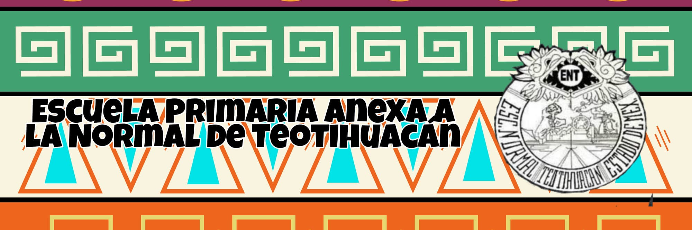

Inicio
Escuela Primaria Anexa a la Normal de Teotihuacan
¿Cuál es el número de teléfono de Escuela Primaria Anexa a la Normal de Teotihuacan?
El número de teléfono de Escuela Primaria Anexa a la Normal de Teotihuacan es 594 956 8337.
¿Dónde se encuentra Escuela Primaria Anexa a la Normal de Teotihuacan?
Escuela Primaria Anexa a la Normal de Teotihuacan se encuentra enAvenida Carlos Hans González SN, Lagunilla, 55810 Acolman, Estado de México, Mexico.
¿Escuela Primaria Anexa a la Normal de Teotihuacan tiene algún contacto principal?
Puede contactar a Escuela Primaria Anexa a la Normal de Teotihuacan por teléfono al 015949568333. Correo:primanexa_teod@hotmail.com